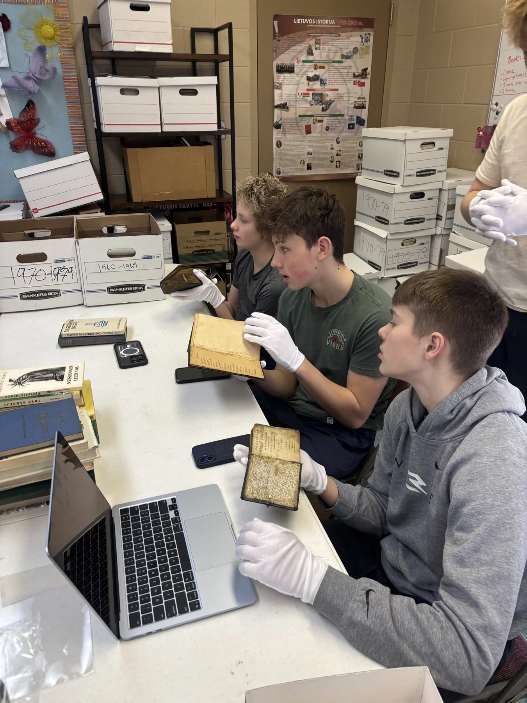

After Lithuanian heritage school, before college: a place for graduates to keep learning and take on work that matters to their community.
Skaitmeniniai Knygnešiai gives young people responsibility for researching, digitizing, and publishing Lithuanian diaspora history. The name recalls the book carriers who kept Lithuanian texts circulating during the nineteenth-century Russian press ban.
Students are entering adult life just as AI changes how knowledge is found and understood. The program asks them to help shape that change, working with original records rather than simply receiving a ready-made account of the past.
Skaitmeniniai knygnešiai – Žiburio lituanistinės mokyklos inicijuota programa, tęsianti istorinę knygnešių misiją naujoje terpėje.
Gimnazijos amžius yra paskutinis etapas, kai lituanistinė mokykla gali giliai įtraukti jaunimą. Daugelyje mokyklų po 8 klasės mokiniai pasitraukia. Nuo 8-os klasės iki universiteto – nieko.
Programa prasideda ties slenksčiu: mokinys eina į suaugusiojo gyvenimą, o tautos atmintis — į pasaulį, kuriame žinios bus randamos, suprantamos ir perduodamos naujaip. Du klausimai neatskiriami vienas nuo kito.

At the archive Darbas
Seven Žiburio Lithuanian School students are digitizing and cataloguing the archive at Divine Providence Lithuanian Church: approximately 4,000 books and historical publications. They also research the people, parishes, and institutions connected to those records.
Through Save Our Lithuanian Parishes, they help document 155 parishes, missions, and congregations across the United States. Materials from other communities are already taking the work beyond Detroit.
They ask what these communities built, why some survived and others disappeared, what has been lost, and what may still be saved.
Komandoje dirba septyni Žiburio mokyklos abiturientai, Dievo Apvaizdos parapijos nariai. Jie yra tos tradicijos, kurią saugo, paveldėtojai. Dirba šeštadieniais nuo 2025 m. rudens.
Kartu su „Save Our Lithuanian Parishes“ jie padeda aprašyti 155 JAV lietuvių parapijas ir kitas įstaigas.
Tai ne prototipas – tai jau veikia.
Learning to read the evidence Kodėl jaunimas
Students photograph books, trace ownership, compare contradictory records, interview elders, and write interpretations grounded in the sources. AI helps them translate, search thousands of pages, and compare material across collections. Students still have to verify the evidence and connect each conclusion to the record.
They learn to distinguish an artifact from its transcription, a quoted fact from an inference, an institution’s account from an individual witness, and an unanswered question from an invitation to invent.
Storage is not understanding. Learning how historical knowledge is made gives young people something a generated summary cannot: the ability to question it.
- Stažuotojas fotografuoja knygą telefonu per programėlę.
- AI „Vincas“ analizuoja ir ištraukia kontekstą.
- Administratorius peržiūri.
- Knyga pasirodo viešame kataloge su istorine, kultūrine ir pedagogine informacija.
Tai ne OCR – tai kontekstualizavimas: kiekviena knyga aprašoma su istorine, kultūrine ir pedagogine informacija, kuri daro archyvą naudingą mokytojams ir tyrėjams.
Dvikryptis darbas: moksleiviai moko dirbtinį intelektą atpažinti detales, o jis moko juos suprasti kontekstą. Sprendimas lieka mokinio rankose.
A place in the community Kita karta
The transition from heritage school to college can weaken a young person’s regular connection to Lithuanian life. The internship gives graduates a continuing role: researching, interpreting, and creating, with responsibility for work other people will use.
The original knygnešiai carried books across borders to sustain language, faith, and identity. Today’s students carry those records from paper into the digital world, where their generation will look for them.
Stažuotojai įgyja technologinius įgūdžius, archyvinio darbo pagrindus ir gebėjimą analizuoti istorinius šaltinius. Bet svarbiausia – formuoja asmeninį ryšį su lietuviška tapatybe.
Kai gimnazistas katalogizuoja DP stovyklos knygą, kurią jo senelis galėjo laikyti rankose – jis tampa knygnešiu kitoje epochoje.
Jie suvokia save ne kaip pasyvius kultūros vartotojus, o kaip aktyvius saugotojus.

A call to support young people Mūsų atsakymas — patys jaunuoliai.
On September 19, 2026, during the 65th anniversary Mass of the Lithuanian Catholic Religious Aid organization in Lemont, Cardinal Rolandas Makrickas called for a new generation of sowers who would support young people and Christian culture.
Our answer is to give young people a part in the work itself.
2026 m. rugsėjo 19 d., Lietuvių katalikų religinės šalpos 65-mečio Mišiose Lemonte, kardinolas Rolandas Makrickas kvietė naują sėjėjų kartą, kuri remtų jaunimą ir krikščionišką kultūrą.
Mūsų atsakymas — patys jaunuoliai.